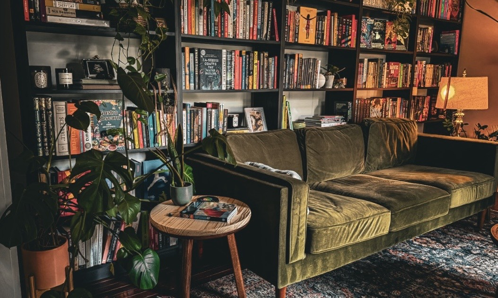

I Wanted to Get Back Into Comics. Here’s What I Read.
Fantasy · Sci-fi · Horror · Comics
Books worth
talking about.
Thoughtful, enthusiastic videos about ambitious reads, strange worlds, and the stories I can’t stop thinking about.
Watch on YouTube →Hi, I’m Charlie
I read widely—and usually with opinions.
This is the home base for Charlie Read a Book: videos about fantasy, science fiction, horror, comics, big reading projects, and whatever has taken over my shelves lately.
Featured videos
Start watching.
My Top 10 Fantasy Books
How I Got Into Reading
Read with me
Charlie Buddy
Read a Book
Want to read something together? I host an ongoing buddy read on Fable where we pick a book, read at our own pace, and talk about it along the way.
Join the buddy read →
On my shelves
The shelves are always changing.
A rotating mix of longtime favorites, strange new discoveries, giant reading projects, and whatever I’m obsessing over next.
Elsewhere
Follow along.
More places to find me, see what I’m reading, and follow along.